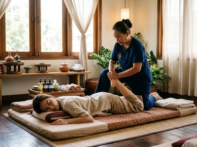

That nagging tightness in your hamstrings, the shoulder that catches during training, the lower back that grumbles after a long shift: these are warnings your body sends before something gives way.
Massage for injury prevention works at exactly this stage. It targets the muscle imbalances, reduced flexibility, and built-up tension that turn minor complaints into real injuries. At Thai Massage Greenock, we help clients across Inverclyde stay ahead of pain — rather than recover from it.
Sports injuries, as described on Wikipedia, occur during sport or exercise. They affect muscles, tendons, ligaments, and joints. They fall into two groups: acute injuries (sudden trauma like a sprain or tear) and chronic injuries (overuse injuries that build slowly through repeated strain).

Around 40% of injuries in physical activity settings are overuse injuries. That means they were preventable.
Muscle imbalances, poor range of motion, and too little recovery all raise the risk of injury. When one muscle group is chronically tight, it puts extra load on nearby tissues and joints. That creates a chain of compensations.
Under enough stress, that chain breaks.
Research published in a systematic review and meta-analysis on sports massage in PMC found that massage produces a meaningful improvement in flexibility. Flexibility is central to injury prevention. Muscles that can move through their full range absorb load better and are far less likely to tear under sudden stress.
Massage works through several mechanisms. It increases blood flow to muscle tissue, bringing oxygen and nutrients while clearing waste. It reduces muscle stiffness and improves joint mobility.
It also works on fascial tissue, breaking down adhesions — the tight bands that restrict movement and create weak points where injury starts.
NHS Inform notes that musculoskeletal disorders are the single biggest cause of work absence in Scotland. Proactive care of muscle and joint health is key to avoiding them.
Thai Sports Massage combines deep pressure with assisted stretching. It finds and resolves tight areas before they develop into strain or injury. Thai Oil Massage complements this with flowing strokes that support recovery between bouts of activity.
Book your session today and let Jariya assess where your body needs support before a problem develops.
At Thai Massage Greenock on South Street, every injury prevention session starts with a conversation. Jariya, trained at Bangkok's Wat Po temple, takes detailed notes on your activity levels, recurring areas of tension, and where you are in your training or work cycle.
This matters because injury prevention massage is not a generic treatment. It is targeted to the specific muscles and movement patterns that carry your load.
Depending on your needs, Jariya may draw on Traditional Thai Massage for full-body assisted stretching that restores range of motion. She may use Thai Sports Massage for deep work on specific muscle groups. Or Thai Foot Massage to address lower-leg tension — often the source of problems further up the body.
You can book your session online and note any areas of concern in advance.
Injury prevention massage is valuable for runners, cyclists, and gym-goers who train hard without structured recovery. It is equally important for office workers and tradespeople in Inverclyde who carry physical load through posture and repeated movement every day.
New parents, manual workers, and anyone returning to activity after a break also benefit strongly. These are the groups most likely to be working with muscle imbalances they are not yet aware of.
If you are active in any capacity, regular sessions at Thai Massage Greenock are one of the most practical steps you can take to stay out of the physio's chair. Get in touch to book your appointment.
For most active people, once every two to four weeks is enough to maintain muscle health, reduce tension, and support range of motion. If you are in heavy training or have a history of recurring injury, more frequent sessions may help.
Jariya will advise on a schedule based on your activity levels and how your body responds after the first session.
Both. Regular massage addresses the conditions that make injury more likely: tight muscles, restricted joints, fascial adhesions, and poor circulation to working tissue. A meta-analysis published in PMC found that massage produces a meaningful improvement in flexibility, which is directly linked to lower injury rates.
Prevention and recovery are part of the same process.
Thai Sports Massage is the most targeted option. It uses deep pressure and assisted stretching to work on specific muscle groups and movement restrictions. Traditional Thai Massage is excellent for full-body flexibility and postural balance.
Jariya will often combine elements of both, depending on where your body holds tension and what you are preparing for.
Absolutely. NHS Inform identifies musculoskeletal disorders as the leading cause of work absence in Scotland. Many of these develop through everyday postural strain and repeated movement, not sport.
Desk workers, tradespeople, drivers, and parents all experience the kind of muscle imbalance that massage addresses. You do not need to run marathons to benefit from keeping your body balanced and mobile.
Therapeutic massage on areas of genuine tension can involve some discomfort. This is a productive discomfort — the feeling of pressure releasing — rather than sharp pain.
Jariya works within each client's tolerance and adjusts pressure throughout the session. You are always encouraged to say how the pressure feels, and the session will adapt.
Many clients notice improved range of motion and reduced tightness after their first session. The fuller benefit comes with regularity. Muscles that are consistently maintained respond better, recover faster, and are less likely to break down under load.
Most clients find that after three or four sessions, the improvement in how their body moves is clear. You can book your first session and see for yourself.